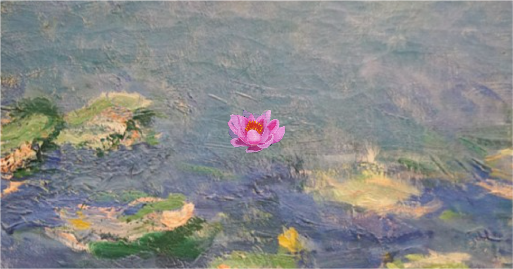

Reflections of Monet is an interactive web art project that reimagines Claude Monet's Water Lilies series into a meditative, immersive scrolling experience. Users interact with a dreamlike environment through subtle movements, ripples, soundscapes, and layered visuals — inviting them to explore the sensation of being enveloped in Monet's paintings.

An interactive web art project that reimagines Claude Monet's Water Lilies series into a meditative, immersive scrolling experience. Users interact with a dreamlike environment through subtle movements, ripples, soundscapes, and layered visuals — inviting them to explore the sensation of being enveloped in Monet's paintings.
I designed and developed this interactive, immersive web experience, translating the serene and contemplative qualities of Monet's Water Lilies into an intuitive and meditative digital journey. My responsibilities included interactive canvas animation, audio-visual integration, performance optimization, custom physics systems, and responsive design.
The journey begins with a zoomed-in cropped section of a Monet painting. A floating lotus is centered on screen, with cursor hover effects hinting at its interactivity.
Clicking the lotus transitions to a tranquil pond with floating lilies. Gentle cursor movements create ripples, accompanied by soft ambient sounds of birds and trickling water.
As users scroll downward, they experience the sensation of sinking beneath the water's surface. The background transitions from light pastels to deeper water tones, while the audio deepens to match the descent.
Users find themselves in a murky, immersive underwater space filled with floating lotus images. The challenge is to find the "real" lotus among the fakes to fill the second slot.
At the deepest layer, schools of fish swim by as Monet's quotes drift through the space. The final lotus reveals itself only on hover, encouraging users to explore and engage with the text and environment.
Upon completing the lotus collection, the screen pixelates and prompts users to scroll outwards, revealing Monet's Bridge over a Pond of Water Lilies. This final transition connects their journey back to the source artwork.